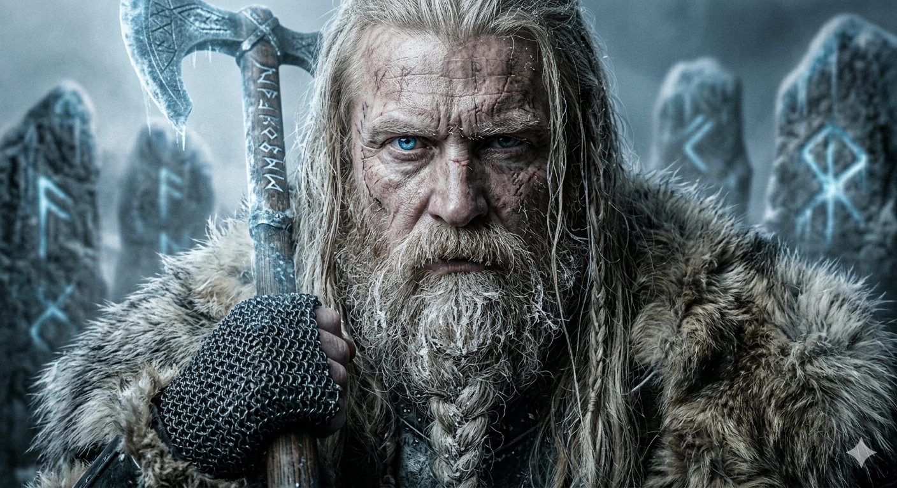
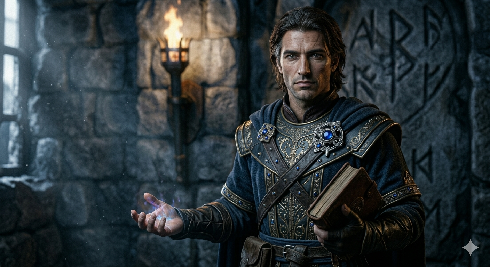
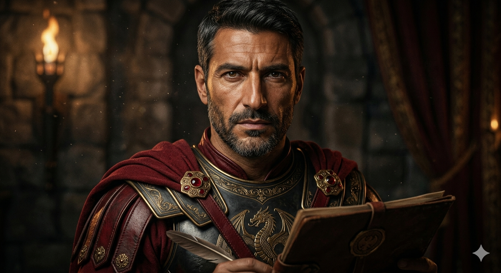
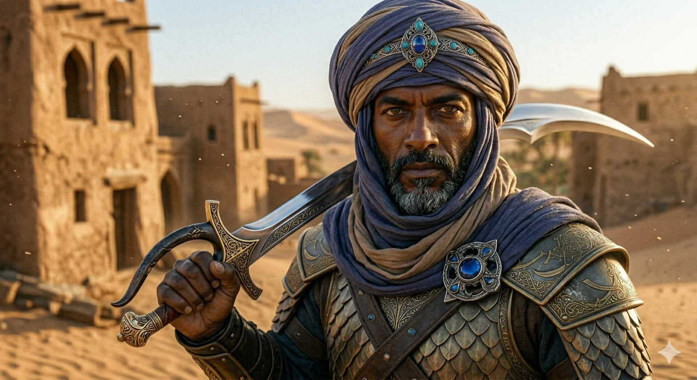
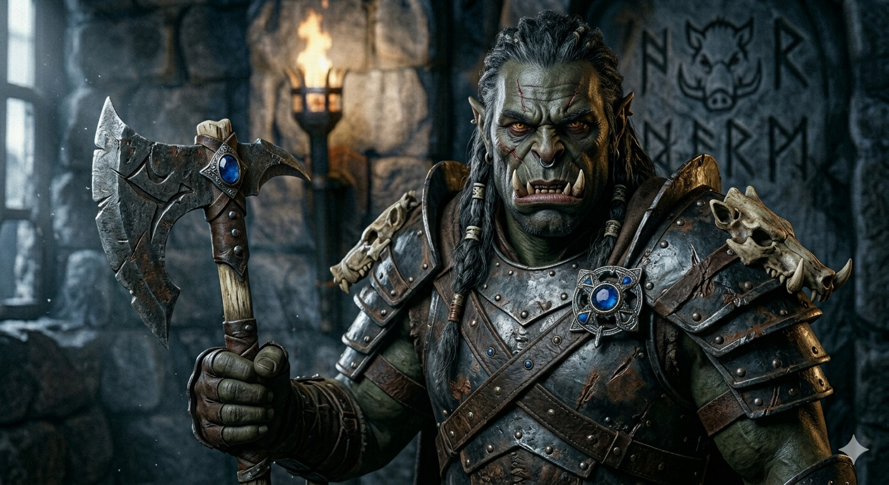
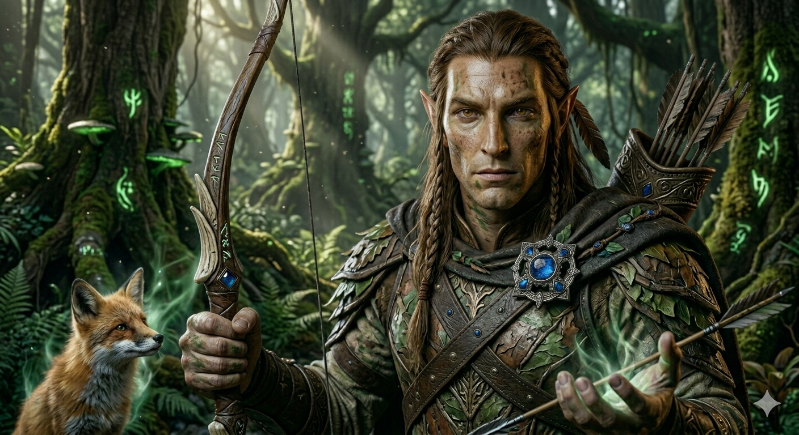
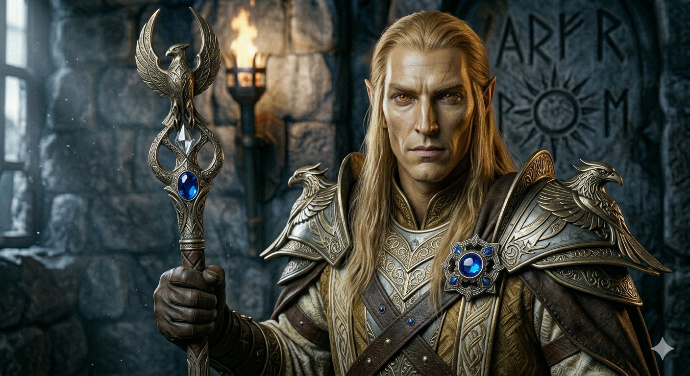
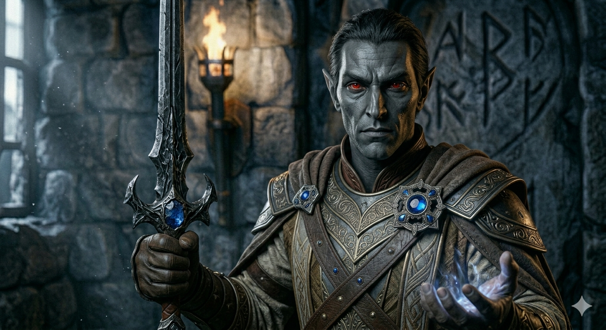
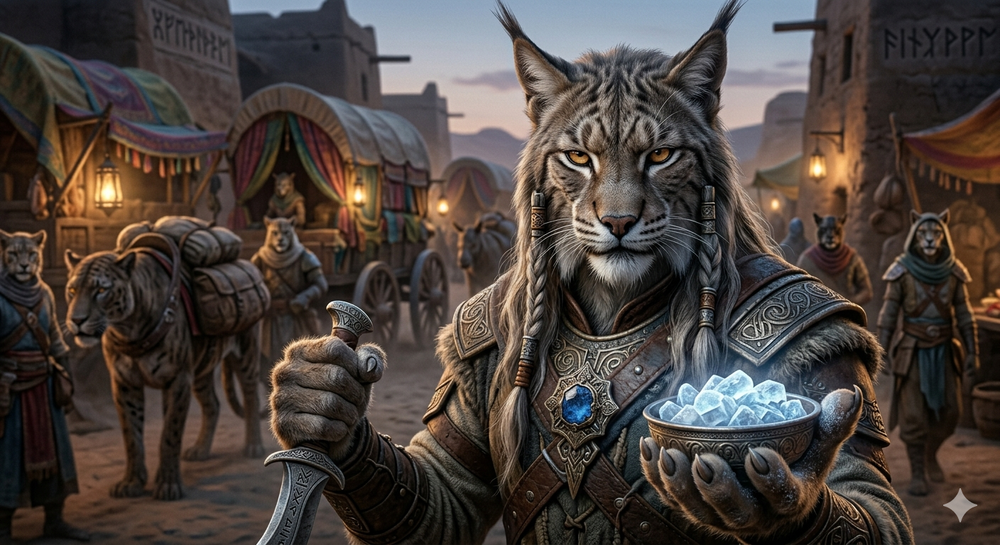
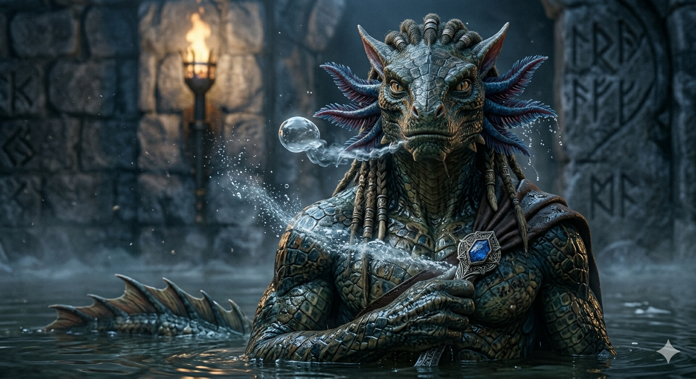

Races of Skyrim

The Nords, also known as the Children of the Sky, are a race of tall, fair-haired humans native to the frozen peaks of
Skyrim. Descended from the ancient Atmorans, they are famous for their incredible resistance to magical frost and their
fierce, enthusiastic nature in battle. Renowned as a militant people, Nords excel in all forms of warfare, from
traditional martial arts to nautical prowess. Their culture is deeply rooted in a prideful heritage of seafaring and
conquest, solidified by the first High Kings who united the disparate Nordic tribes into a singular, powerful kingdom
built on strength and honor.

The Bretons are a hybrid race of human and elven ancestry hailing from the fractured feudal kingdoms of High Rock. Born
from centuries of interbreeding between Nedic tribes and Aldmer lords, they possess an instinctive bond for the magical
arts, excelling in spellcraft, alchemy, and enchantment. Despite their shorter human lifespans, Bretons are renowned for
their natural resistance to magic and a "quest-obsession" that defines their national identity. Their culture is a
unique blend of noble chivalry, knightly tradition, and ancient druidic roots, producing some of the most gifted
sorcerers and resourceful warriors in all of Tamriel.

The Imperials, also known as Cyrodiils, are the well-educated and cosmopolitan natives of the Empire's heartland.
Renowned for their diplomatic shrewdness and remarkable discipline, they are masters of trade, law, and organized
warfare. This unique blend of administrative skill and infantry training allowed them to unite Tamriel under three
distinct Empires. Deeply connected to their ancestral land, Imperial culture is defined by a "king-is-the-land"
tradition and a civilized pragmatism that has shaped the history of the continent for eras.

The Redguards, hailing from the sun-drenched province of Hammerfell, are the most naturally talented warriors in all of
Tamriel. Originating from the lost continent of Yokuda, they possess tall, finely toned physiques and hardy
constitutions that grant them remarkable resistance to poison and the desert's heat. Renowned as brilliant battlefield
tacticians and fleet-footed masters of weaponry, Redguards have built a culture synonymous with surviving the harshest
environments. Whether as elite mercenaries or legendary sailors, they are a proud, independent people defined by their
unparalleled martial skill and love for adventure.

The Orcs, or Orsimer, are the "Pariah Folk" of the Wrothgarian and Dragontail Mountains. Though they possess elven
blood, they are defined by their unshakable courage and unflinching endurance of hardships. Once feared as uncivilized
barbarians, Orcs have won hard-earned respect across Tamriel through their distinguished service in the Imperial Legion
and their peerless craftsmanship as armorers. Formidable front-line warriors, they are famous for their heavy armor and
the terrifying power of their berserker rage. Stern but just, Orc society is built on a code of strength and honor,
producing some of the finest smiths and soldiers the Empire has ever known.

The Bosmer, or Wood Elves, are the nimble clan-folk of Valenwood’s Great Forests. Rejecting the stiff formalities of
their elven cousins, they embrace a life of harmony with nature as the "Tree-Sap people." Renowned as the finest archers
in all of Tamriel, Bosmer possess legendary agility and a natural resistance to poison and disease. Their unique bond
with the wild allows them to command simple-minded creatures and vanish into the foliage with ease. Whether as elite
scouts, cunning thieves, or practitioners of the mysterious Green Pact, the Bosmer are a prolific and quick-witted
people who prioritize freedom and the ancient traditions of the hunt.

The Altmer, or High Elves, are the tall, golden-skinned "Cultured People" of the Summerset Isles. Proudly claiming
direct descent from the Aedra, they are the purest heirs to the ancient Aldmer and the most gifted practitioners of the
arcane arts in Tamriel. Their exceptional intelligence and naturally long lifespans—often spanning many centuries—allow
them to master complex magical disciplines beyond the reach of other races. Though sometimes perceived as aloof or
arrogant, Altmer society is a pinnacle of scholarly refinement and tradition, having laid the foundational roots for the
continent’s language, law, and high culture.

The Dunmer, or Dark Elves, are the grey-skinned, red-eyed "Pureblooded Folk" of Morrowind. Shaped by a history of
betrayal and ill-fortune, they possess a unique combination of powerful intellects and agile physiques, making them
exceptional warriors and sorcerers. Renowned for their balanced mastery of the sword, the bow, and Destruction magic,
Dunmer are naturally resistant to fire—a trait born from their volcanic homeland. Though outsiders often perceive them
as grim, aloof, or even ruthless, the Dunmer deeply value family and loyalty, navigating the world with a vengeful pride
and a resilience forged in the ashlands of the East.

The Khajiit are the feline "desert-dwellers" of the province of Elsweyr, celebrated for their exceptional intelligence,
agility, and natural stealth. Their morphology is uniquely tied to the lunar phases of Jone and Jode, ranging from agile
scouts to fearsome warriors who master specialized unarmed martial arts using their razor-sharp claws. Though often
unfairly stereotyped as mere thieves or skooma-peddlers, Khajiit possess a rich culture of nomadic pride, ancient
mercantile traditions, and a deep spiritual connection to the "crystallized moonlight" of Moon Sugar. As naturally
gifted acrobats and night-hunters, they navigate Tamriel as resourceful survivors and incomparable masters of the
shadows.

The Argonians, or Saxhleel, are the resilient reptilian natives of Black Marsh. Deeply connected to the sentient Hist
trees, they are renowned as the foremost experts in guerrilla warfare, stealth, and survival. Their unique physiology
allows them to breathe underwater and grants them a natural immunity to the deadliest diseases and poisons of Tamriel.
Often misunderstood by other races as "Lizard Folk," the Argonians are a reserved and cunning people, possessing an
alien grace and a noble culture forged in the most treacherous swamplands of the continent.